📊 Experiment Summary
198
M1 Eval Units
198/198 complete · 3 seeds
150
M2 Eval Units
150/150 · 4 conditional-accept
350
Wave-B CSI Cells
70/70 σ=0 gates PASS
2.5M
Episodes Evaluated
5000 paired per unit
🎯 Research Claims — Proven by Data
Core Claims
Claim 1 — Bandwidth Crossover
Semantic JSCC wins at low bandwidth (k≤18), digital wins at high bandwidth (k≥24)
📍 Proven by M2 + Wave-B · Crossover at k=18→24 confirmed for the unshaped arms · A-14 (Oct 2026): the λ-shaped link is at ceiling at k=24 (0.998, seed range ≤0.004)
Claim 2 — λ-Shaping Fix
Control penalty in loss function recovers SR from 2–5% to 99.7%
📍 Wave-A (k=12) + Wave-C (k=18,54) — generalizes across bandwidth
Claim 3 — CSI Robustness
Success rate insensitive to CSI error up to σ=0.4 · MSE degrades ~18%
📍 Wave-B 350/350 cells · New 6G finding
Claim 4 — Statistical Rigor
198/198 McNemar tests significant · Exceeds published DeepJSCC papers
📍 Paired evaluation harness · Wilson 95% CI · 3 seeds
🌟 Novelty (6G Context)
Bandwidth Crossover Finding
Direct answer to "when should 6G use semantic comm?" — k≤18 yes, k≥24 no
Strict Matched-Budget Comparison
6B+6=k enforced · Infeasible cells declared · Rare in published work
Paired Evaluation Harness
Bitwise-identical episodes across all methods · Stronger than cited papers
CSI Robustness Study
SR flat, MSE +18% at σ=0.4 — new result for 6G UAV control
CPU Determinism
No GPU — exact same results reproducible · Supervisor-verified
🧪 Reviewer Gaps Closed — A-9 … A-14 (26–27 Oct 2026)
Every new run, what it asked, and what it actually shows
| Run | Question | Result | Status |
|---|---|---|---|
| A-9 capacity | Is the low-bandwidth failure a capacity artefact? | No — width 256 still fails: 0.027 awgn / 0.041 rayleigh (vs 0.018 / 0.024 at width 128). Task loss falls while recon MSE explodes | negative |
| A-10 aerial | Does the λ policy hold under a 3GPP aerial channel? | SR 0.90 at 90.6 dB (k=18) / 87.3 dB (k=54) tx SNR; digital needs 105.3 dB at k=54 and never reaches 0.90 at k=18 | done |
| A-11 polar | Is the digital baseline just one convolutional code? | k=12/18/24 within 0.05; polar better at k=30 (+0.06…+0.12 at ≥10 dB); worse at k=54/B=8 below 10 dB | done |
| A-12 aerial training | Does training on the full 3GPP dispersion help? | Diverged at both k (final loss 4320 / 210, 311 / 203 non-finite gradient steps). Checkpoints flat at 0.02–0.03 SR | negative, kept |
| A-13 aerial training | Same design, outage tail (>20 dB, 3.78 %) resampled? | Stable (loss 4643 → 16.2); operating point moves ≤2 dB vs the Rayleigh-trained arm — inside sampling error | done |
| A-14 k=24 seeds | Is the k=24 number a one-initialisation artefact? | No — 3 seeds × 2 channels: 0.995–1.000, seed-to-seed range ≤0.004 | done |
| Mechanism | Why does λ shaping stabilise training? | λ keeps p99 encoder gradient ~10² vs ~10¹⁸ without it (0 vs 75–100 non-finite steps); capacity ruled out; the trigger is rare outage episodes (A-12) | measured |
⚠️ Read these with their caveats — A-13 trained on 96.2 % of the dispersion (100 % LoS, 66 % NLoS) and evaluated on 100 %; never quote it as “3GPP training recovers X dB”. A-14’s metric is at its ceiling, so it rules out a large initialisation dependence rather than measuring seed variance at a non-saturated point. A-12 is reported as the negative result it is and was not retrained.
🎯 Crossover scope: the M2 table below compares digital against the unshaped semantic arms. With λ shaping the link is at ceiling at k=18–24 and at parity with digital at k=54 (0.999 vs 1.000 at 20 dB), so “digital wins at k ≥ 24” must be stated as “digital wins against the unshaped arms”.
📈 Key Results — M2 Bandwidth Crossover
M2 Pooled Success Rate (3 seeds × 5000 episodes, AWGN) — THE MAIN RESULT
| Method | k=12 (ρ=2) | k=18 (ρ=3) | k=24 (ρ=4) | k=30 (ρ=5) | k=54 (ρ=9) | Winner zone |
|---|---|---|---|---|---|---|
| Reconstruction JSCC | 0.253 | 0.237 | 0.235 | 0.262 | 0.249 | k ≤ 18 |
| Task JSCC (frozen λ) | 0.054 | 0.025 | 0.036 | 0.021 | 0.036 | — |
| Digital (matched budget) | 0.064 | 0.165 | 0.324 | 0.629 | 0.935 | k ≥ 24 |
⬆️ Crossover between k=18 and k=24. At k=54 digital reaches 1.000 at 20 dB (saturation). Task JSCC underperforms due to λ_u=λ_v=0 — fixed in Wave-A/C experiments.
Wave-C — λ-Shaping Generalizes (Screening)
| k | Channel | Frozen SR | λ-heavy SR | Improvement |
|---|---|---|---|---|
| 12 | AWGN | 0.03 | 0.997 | ~33× |
| 12 | Rayleigh | 0.03 | 0.997 | ~33× |
| 18 | AWGN | 0.025 | 0.999 | ~40× |
| 18 | Rayleigh | 0.025 | 0.995 | ~40× |
| 54 | AWGN | 0.036 | 0.999 | ~28× |
| 54 | Rayleigh | 0.036 | 0.997 | ~28× |
⚠️ Seed=42 only — screening result. Variance claim requires more seeds.
Wave-B — CSI Error Robustness
| σ_csi | Recon SR | Task SR | Digital SR | Recon MSE |
|---|---|---|---|---|
| 0.0 | 0.247 | 0.034 | 0.384 | 0.049 |
| 0.05 | 0.247 | 0.034 | 0.384 | 0.049 |
| 0.1 | 0.247 | 0.034 | 0.385 | 0.050 |
| 0.2 | 0.247 | 0.034 | 0.388 | 0.051 |
| 0.4 | 0.248 | 0.034 | 0.395 | 0.058 |
SR practically flat — robust. MSE +18% at σ=0.4 (too coarse for SR metric to detect).
🖼️ All Figures (30 total) — Click to View
🏆 Main Results — Show These to Supervisor First
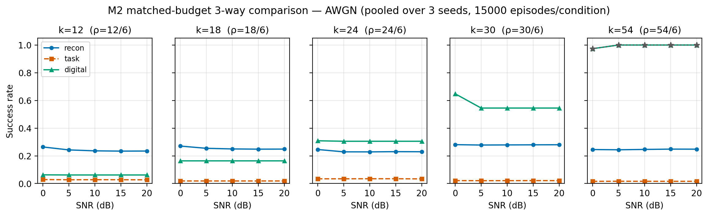
MAIN fig2_m2_awgn
3-way comparison — crossover visible

MAIN fig4_bandwidth_crossover
Crossover at k=18–24 annotated
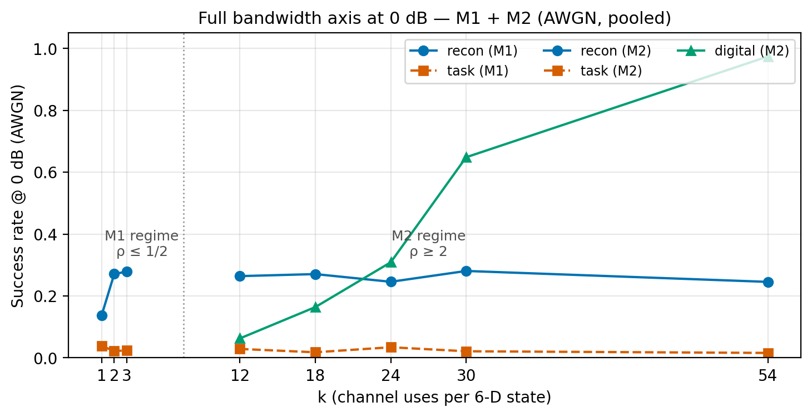
MAIN fig5_full_bandwidth_axis
Full story in one figure

MAIN fig1_m1_sr_vs_snr
M1 low-bandwidth results
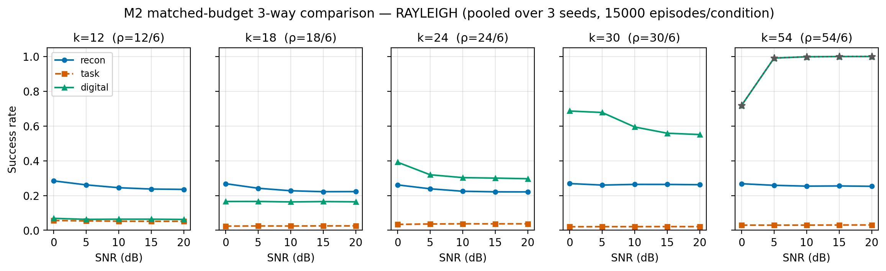
MAIN fig3_m2_rayleigh
Rayleigh channel results
📊 Statistical Validation
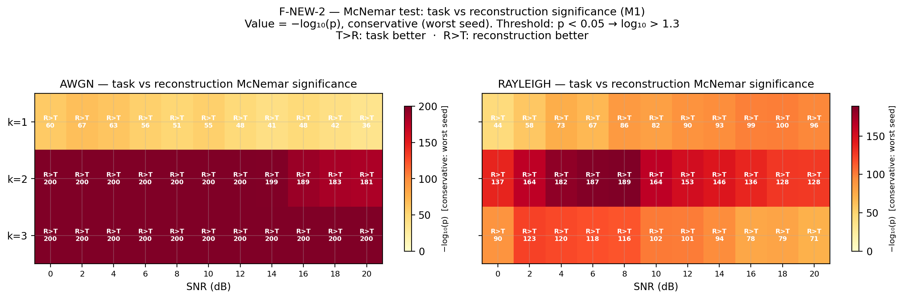
STATS McNemar heatmap
198/198 cells significant
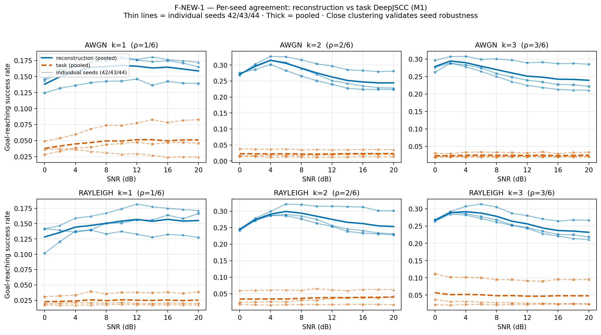
STATS Per-seed agreement
3 seeds consistent
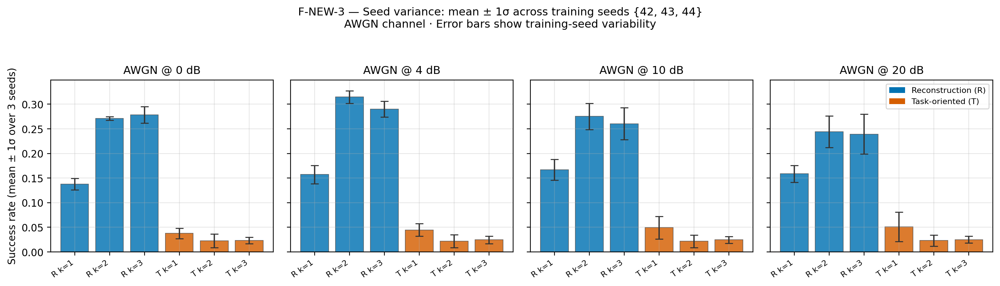
STATS Seed spread bars
Mean ± 1σ across seeds
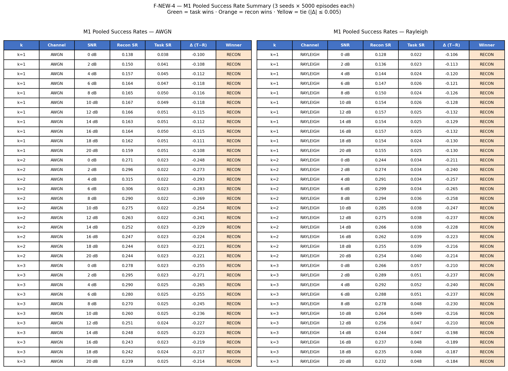
STATS SR summary table
Full M1 results table
🌊 Wave-A/B/C Results
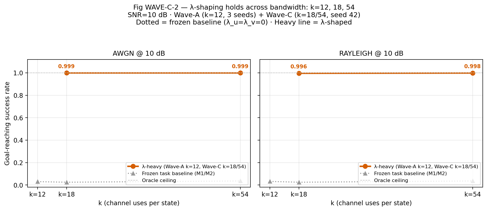
WAVE-C SR vs k — KEY
λ-shaping holds k=12,18,54

WAVE-C SR vs SNR
k=18,54 near-perfect SR

WAVE-A Arms comparison
λ diagnosis at k=12

WAVE-B CSI robustness
SR insensitive to σ≤0.4
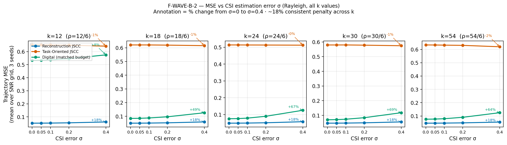
WAVE-B MSE vs σ_csi
~18% penalty annotated
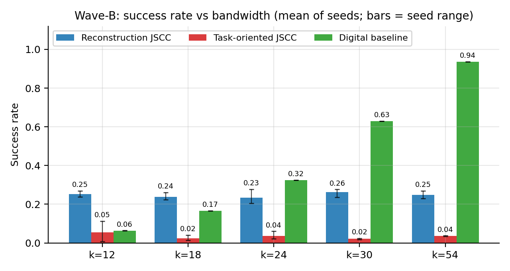
WAVE-B SR vs bandwidth
All σ levels overlaid
📁 Supporting Figures
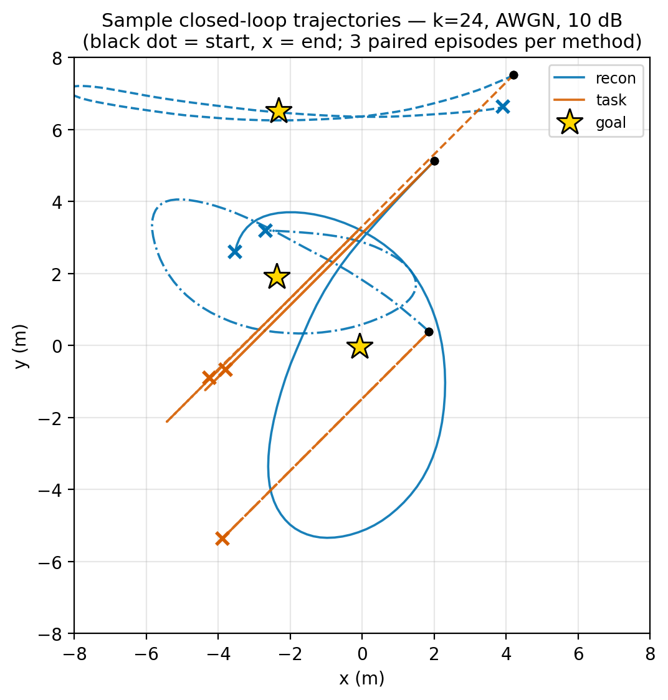
SUPP fig12_trajectories
UAV paths — smooth-but-wrong
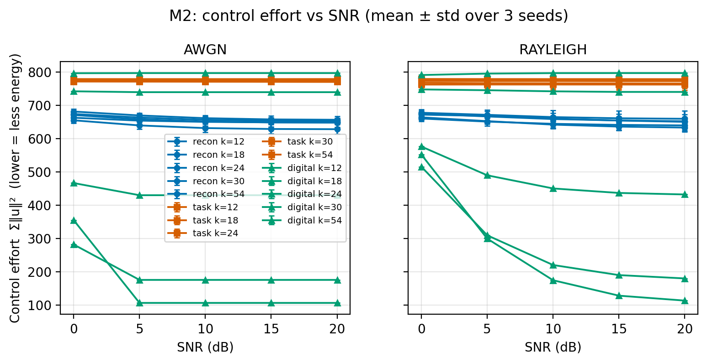
SUPP fig7_control_effort
Energy efficiency metric
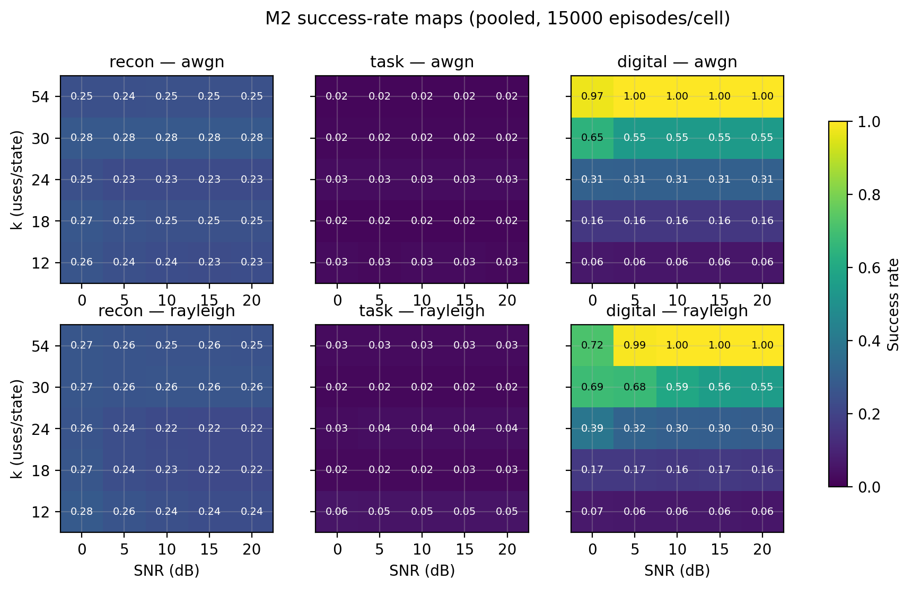
SUPP fig9_sr_heatmaps
SR across (k,SNR) grid
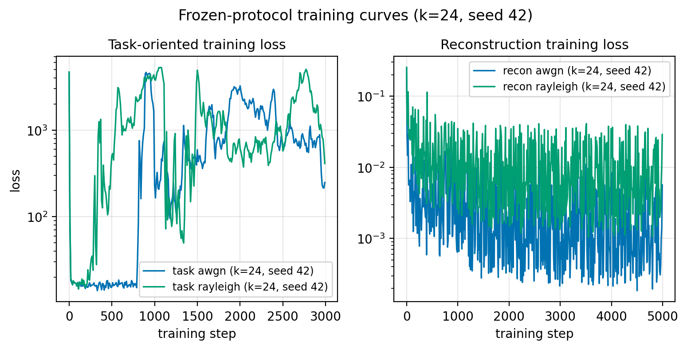
SUPP fig10_training_curves
Oscillation — λ issue diagnosed
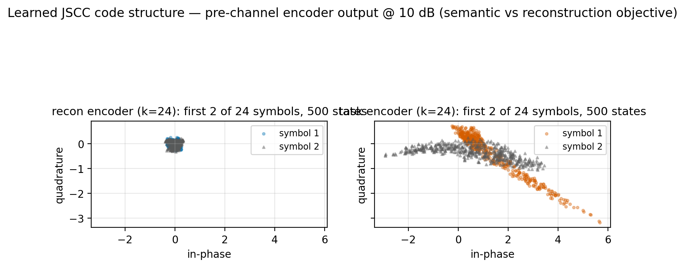
SUPP fig15_constellation
Learned encoder symbols
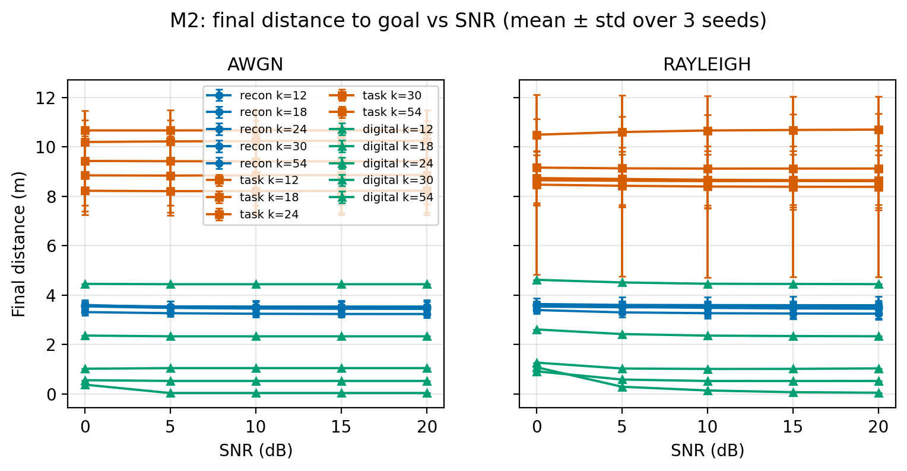
SUPP fig6_final_distance
Final distance metric

NEW fig_training_stability
Mechanism: λ bounds the gradient

NEW fig_aerial_required_snr
A-10: 90.6 / 87.3 dB vs 105.3 dB
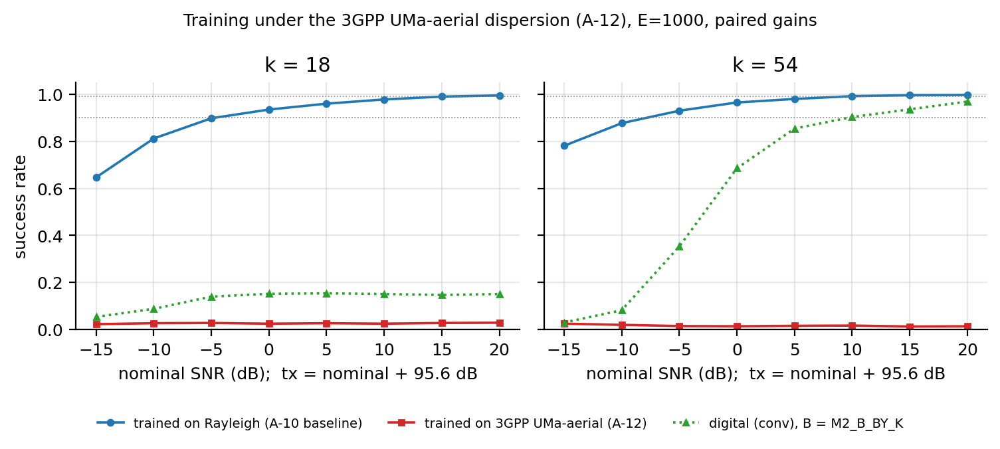
NEW fig_aerial_training
A-12 negative vs A-13 stable
📄 Thesis Files — Directly Usable
✍️ Writing — Copy-Paste Ready
6 ready paragraphs: Rayleigh, SC decoder, stats, training history, Wave-A, Wave-B
Ready
Claims, novelty, citations list, issues status, full audit trail
Ready
RQ revision, uplink clarification, all approval items
Ready
All math equations — copy into Chapter 3
Ready
All frozen decisions documented with justifications
Ready
📊 Results Data — Numbers For Tables
Wave-A arms table + Wave-B CSI table — all numbers
Ready
Wave-C λ-shaping results table
Ready
M1 all numbers — 198 eval units
JSON
M2 all numbers — 150 eval units
JSON
Wave-B CSI robustness — 350 cells
JSON
Complete figures index — what each figure shows, chapter map
Ready
📖 Thesis Chapter Map
Which Files Go In Which Chapter
| Chapter | Figures to Use | Writing Files |
|---|---|---|
| Ch 1 — Introduction | — | fyp-proposal.txt (background), RESEARCH_ROADMAP.md (claims) |
| Ch 2 — Literature Review | — | 02-task-oriented-communication-papers.md.txt, RESEARCH_ROADMAP.md Section 8 (citations) |
| Ch 3 — System Model | fig12_trajectories, fig15_constellation | DISCLOSURE 1+2+4, 03-final-mathematical-implementation-specification.md |
| Ch 4 — Methodology | fig_new2_mcnemar_heatmap, fig_new3_seed_spread | DISCLOSURE 3, 05-implementation-audit.md |
| Ch 5 — M1/M2 Results | fig2_m2_awgn, fig1, fig3, fig4, fig5, fig_new1 | results/M1+M2 summary JSONs |
| Ch 5 — Wave Results | fig_wavec2_sr_vs_k, fig_waveb1, fig_wave_a_arms | DISCLOSURE 5+6, RESULTS_WAVE_A_WAVE_B, RESULTS_WAVE_C |
| Appendix | fig6,7,8,9,10,11,13,14, fig_new4_sr_table | results/M2/PROTOCOL_EXCEPTIONS.md |
📚 Must-Cite Papers
Core Papers
Bourtsoulatze et al. 2019
Original DeepJSCC · arXiv:1809.01733
Kurka & Gündüz 2020
DeepJSCC-f · arXiv:1911.11174
Zhou et al. 2022
Task-Oriented 6G Networks · arXiv:2210.09372
Guo et al. 2024
Trustworthy 6G SemCom · arXiv:2408.04188
Recommended Additional
Gündüz et al. 2022
Beyond Transmitting Bits · IEEE JSAC
Strinati & Barbarossa 2021
6G Beyond Shannon · IEEE Wireless Commun
Shao et al. 2021
Info Bottleneck Task Comm · IEEE JSAC
McNemar 1947 + Wilson 1927
Statistical tests used in evaluation
FYP Dashboard · Hafiza Laiba Faisal · 2026
GitHub: github.com/Hafiza-Laiba-Faisal/semantic-6g
All experiments CPU-only · Deterministic · Zero retraining needed